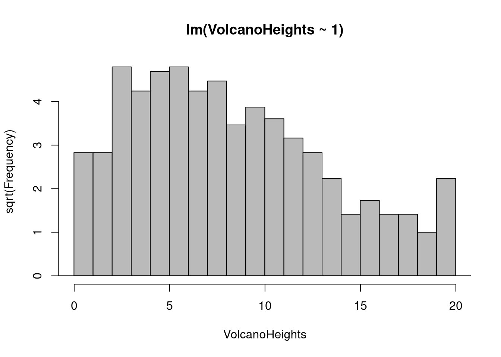
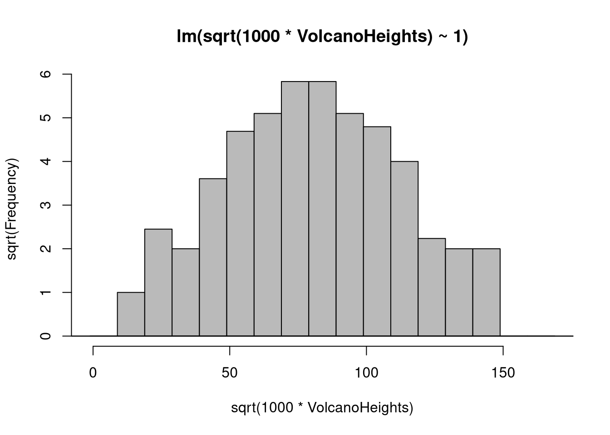
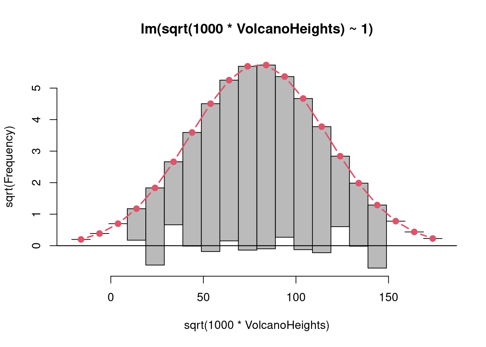
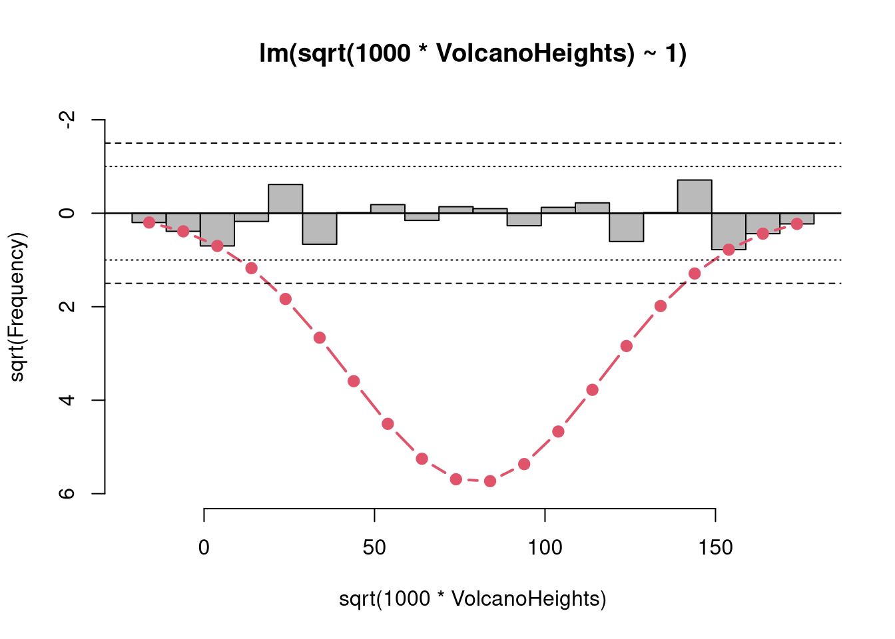

library("topmodels")
## Rootograms from Tukey (1972)
## (some 'breaks' don't match exactly)
library("topmodels")
data("VolcanoHeights", package = "topmodels")
## Figure 16
rootogram(lm(VolcanoHeights ~ 1), style = "standing",
breaks = 0:20 - 0.01, expected = FALSE, confint = FALSE)
## Figure 17
rootogram(lm(sqrt(1000 * VolcanoHeights) ~ 1), style = "standing",
breaks = 0:17 * 10 - 1.1, expected = FALSE, confint = FALSE)
## Figure 18
rootogram(lm(sqrt(1000 * VolcanoHeights) ~ 1), style = "hanging",
breaks = -2:18 * 10 - 1.1, confint = FALSE)
## Figure 19
rootogram(lm(sqrt(1000 * VolcanoHeights) ~ 1), style = "suspended",
breaks = -2:18 * 10 - 1.1, ylim = c(6, -2), confint = FALSE)
abline(h = c(-1.5, -1, 1, 1.5), lty = c(2, 3, 3, 2))